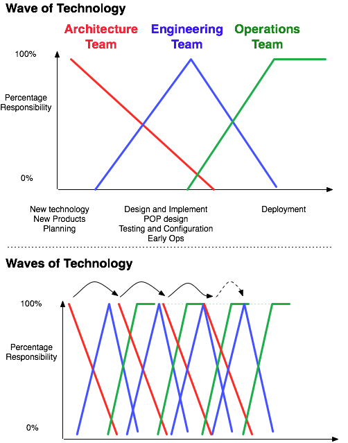
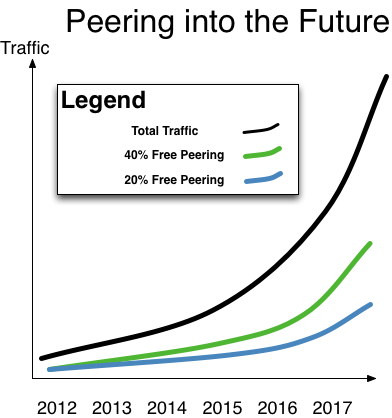

Chapter 14 - The Future
“The more things change, the more they stay the same.” – A proverb loosely translated from “plus ça change, plus c’est la même chose”
When asked what he thought the stock market would do next, J.P. Morgan answered, “It will fluctuate.”
The global Internet Peering Ecosystem seems to evolve and morph to meet the demands of the users and applications. Expect this evolution to continue and for the stakes to get higher.
Evolution Continues
In particular, new networking technology will continue to arrive in waves and will continue to be deployed (Figure 14-1). Each wave brings efficiencies – typically four to ten times the bandwidth for double the cost. These technologies will continue through the architecture-engineering-operations cycle as shown in the figure, and the core will get faster and the unit cost for transport will continue to drop.

Figure 14-1. New technologies continue through the architecture, engineering, and operations cycles.
The Future of Internet Transit Pricing
The market price for Internet Transit will continue to drop. Everyone will say that it won’t and can’t drop any lower. Internet Transit will be measured in Gbps (as in “$700/Gbps”) or in pennies per Mbps (as in “70 cents per Mbps”). The market will become increasingly commoditized, and those without economies of scale will not be able to compete in the wholesale transit market.
The Future Internet Traffic Growth
Traffic will continue to grow; in particular, bandwidth-intensive video traffic. When I had my first conference call and my first video experience over the Internet, it barely worked at all. It was amazing, though, that it kind of worked. Soon, we all came to experience shared television shows shared over Usenet news feeds, slow to download but flawless when played. This teeter-totter balance between speed-to-watching and quality-of-experience continues to this day. A friend described the trajectory best in the “Video Suckiness Tolerance Curve,” shown in Figure 14-2.

Figure 14-2. The Internet Video “Suckiness” Tolerance Curve.
As the quality of streaming and the bandwidth capacity continue to increase, the expectations about video streaming quality increase. That increase in expectations will drive the requirement for an increasingly stable (low latency, low jitter, high speed, highly reliant, high reliability, etc.), perhaps massively distributed underlying infrastructure.
The Internet paradigm will change. This book has been about the internal workings of the Internet, but the Internet will emerge as but one part of a much larger video distribution supply chain. If 80% of Internet traffic is video, then the Internet will morph from a general-purpose packet-delivery system into an optimized and tuned video-delivery system (that happens to handle that other stuff as well).
If you examine the Video Internet ecosystem, you will see that this book discusses only a small piece of the video-delivery ecosystem. If this ecosystem is what the Internet is evolving to be, then all of us in the Internet services space had better come to terms with the bigger picture.

Figure 14-3. Free peering today results in more free peering tomorrow.
The Next Generation of IXPs will Emerge
One future-looking question I always get is, “Can the large IXPs be displaced?” (This question usually comes from a startup IXP frustrated with the challenges of competing against the dominant IXP.)
Emerging IXPs challenge the big IXPs. Many of the dominant IXPs have grown well past critical mass and therefore provide great value to their customers and offer great value to the marketplace. Startup IXPs will have a tough time convincing prospects that they, too, have value. However, some startup IXPs recognize that their strength is their agility. They will realize that they can frame a superior value proposition to customers, they can satisfy some niche, they will be more entrenched in the community, and they will be able to execute when the large organizations have meetings to discuss a response to the changing market. The large IXPs service so many countries and have so many staff that they will be slower to adjust, and the smaller startups will capture the opportunity to build the next-generation IXP.
The next-generation Internet Exchange Points will emerge in the next 3 to 5 years. These new facilities have three drivers. First, the current generation of interconnect facilities were built over a decade ago, with a power density (1.75KVA per rack) appropriate for the era. These facilities are simply unable to provide the power for the next generation of equipment that will handle the emerging video traffic. Internet traffic has traditionally grown at 35% per year or so, and the video traffic is expected to be 80% of all Internet traffic by 2013. This growth will require the ability to interconnect and the ability to stream video at terabit-per-second speeds. The equipment to provide these speeds will likely require closer to 20KVA per rack, and the older facilities are unlikely to be able to provide that environment for the massive volumes of video distributors and access networks at the core.
The next generation of facilities will likely follow the same trajectories as in the past. The Tier 1 ISPs will not be able to keep up in the current environments; they will get together and put out a request for proposal to all of the major IXPs and colocation companies, and then they will select a center in each of dozens of interconnection regions across the country. These facilities will be 20KVA facilities, near the existing colocation centers and into the new high growth markets, and the Tier 1 ISPs will extend their networks there. The CDNs and access networks will follow them, and shortly thereafter the place for Tier 2 interconnection and content hosting will be at these new facilities.
Emerging markets in Eastern Europe, the Middle East and Africa will grow their own dominant regional IXPs. It is interesting to watch parts of Eastern Europe establish Internet Exchange Points that start to rival the growth seen in Western Europe. While the Middle East and Africa lag behind, I see great growth opportunity as evidenced by a marked increase in the number of peering workshops that I run there.
The Future of the Internet Peering Ecosystem
The Internet Peering Ecosystem will evolve, but fundamentally will remain glued together with Internet Transit and Internet Peering relationships.